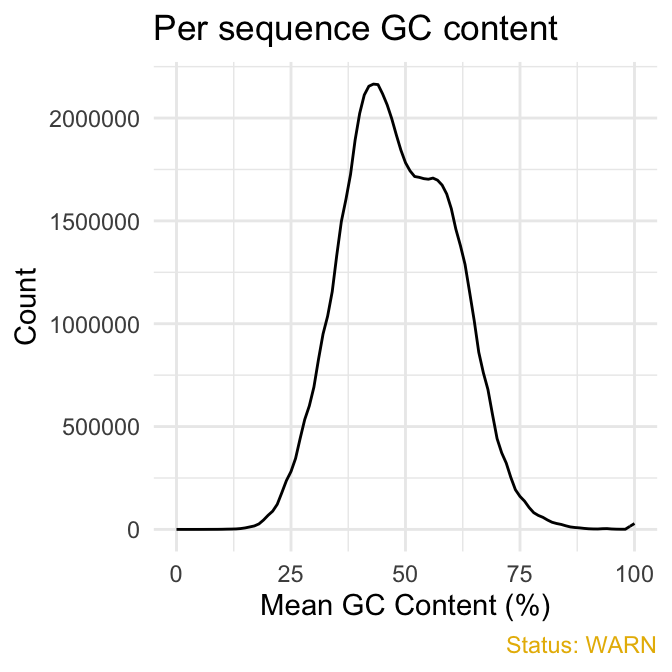
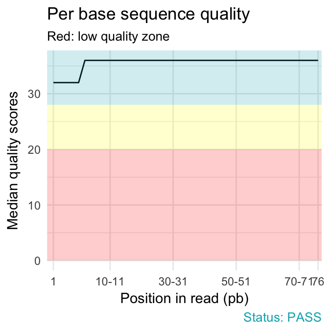
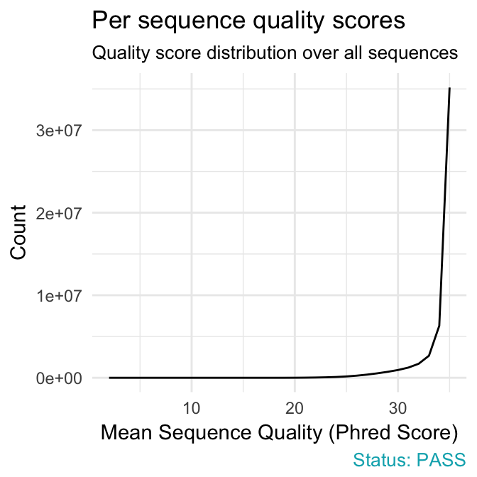
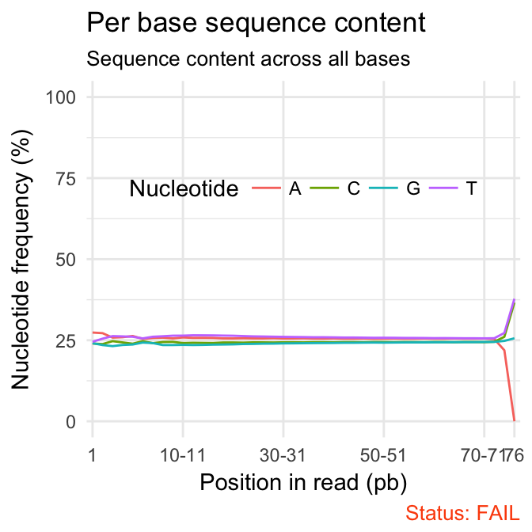
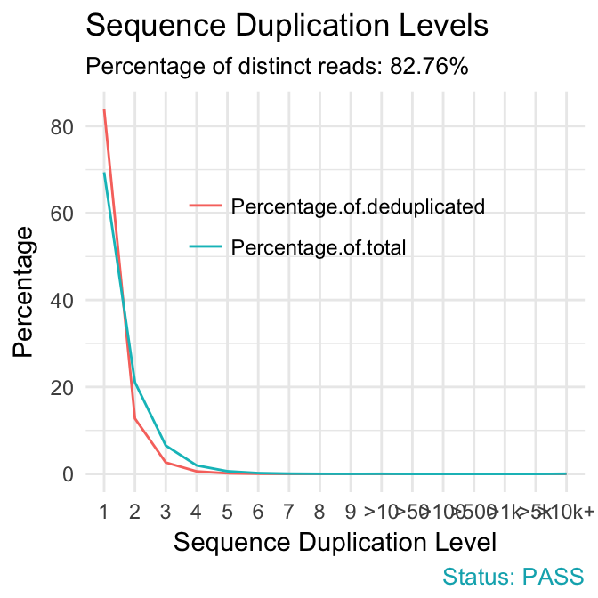

The FastQC, written by Simon Andrews at the Babraham Institute, is the most widely used sequence quality assessment tool for evaluating the raw reads from high throughput sequencing data.
It produces, for each sample, an html report and a ‘zip’ file, which contains a file called fastqc_data.txt and summary.txt.
If you have hundreds of samples, you’re not going to open up each HTML page. You need some way of looking at these data in aggregate.
The fastqcr R package provides helper functions to easily and automatically parse, aggregate and analyze FastQC reports for large numbers of samples.
Additionally, the fastqcr package provides a convenient solution for building a multi-QC report and a one-sample FastQC report with the result interpretations. The online documentation is available at: http://www.sthda.com/english/rpkgs/fastqcr/.
Examples of QC reports, generated automatically by the fastqcr R package, include:
Installation and loading
- fastqcr can be installed from CRAN as follow:
install.packages("fastqcr")
- Or, install the latest version from GitHub:
if(!require(devtools)) install.packages("devtools")
devtools::install_github("kassambara/fastqcr")
Quick Start
library(fastqcr)
# Aggregating Multiple FastQC Reports into a Data Frame
#%%%%%%%%%%%%%%%%%%%%%%%%%%%%%%%%%%%%%%%%%%%%%%%%%%%%%
# Demo QC directory containing zipped FASTQC reports
qc.dir <- system.file("fastqc_results", package = "fastqcr")
qc <- qc_aggregate(qc.dir)
qc
# Inspecting QC Problems
#%%%%%%%%%%%%%%%%%%%%%%%%%%%%%%%%%%%%%%%%%%%%%%%%%%%%%
# See which modules failed in the most samples
qc_fails(qc, "module")
# Or, see which samples failed the most
qc_fails(qc, "sample")
# Building Multi QC Reports
#%%%%%%%%%%%%%%%%%%%%%%%%%%%%%%%%%%%%%%%%%%%%%%%%%%%%%
qc_report(qc.dir, result.file = "multi-qc-report" )
# Building One-Sample QC Reports (+ Interpretation)
#%%%%%%%%%%%%%%%%%%%%%%%%%%%%%%%%%%%%%%%%%%%%%%%%%%%%%
qc.file <- system.file("fastqc_results", "S1_fastqc.zip", package = "fastqcr")
qc_report(qc.file, result.file = "one-sample-report",
interpret = TRUE)
Main Functions
1) Installing and Running FastQC
2) Aggregating and Summarizing Multiple FastQC Reports
qc <- qc_aggregate(): Aggregate multiple FastQC reports into a data frame.
summary(qc): Generates a summary of qc_aggregate.
qc_stats(qc): General statistics of FastQC reports.
3) Inspecting Problems
qc_fails(qc): Displays samples or modules that failed.
qc_warns(qc): Displays samples or modules that warned.
qc_problems(qc): Union of qc_fails() and qc_warns(). Display which samples or modules that failed or warned.
4) Importing and Plotting FastQC Reports
5) Building One-Sample and Multi-QC Reports
-
qc_report(): Create an HTML file containing FastQC reports of one or multiple files. Inputs can be either a directory containing multiple FastQC reports or a single sample FastQC report.
6) Others
-
qc_unzip(): Unzip all zipped files in the qc.dir directory.
Installing FastQC from R
You can install automatically the FastQC tool from R as follow:
Running FastQC from R
The supported file formats by FastQC include:
- FASTQ
- gzip compressed FASTQ
Suppose that your working directory is organized as follow:
where, FASTQ is the directory containing your FASTQ files, for which you want to perform the quality control check.
To run FastQC from R, type this:
fastqc(fq.dir = "~/Documents/FASTQ", # FASTQ files directory
qc.dir = "~/Documents/FASTQC", # Results direcory
threads = 4 # Number of threads
)
FastQC Reports
For each sample, FastQC performs a series of tests called analysis modules.
These modules include:
- Basic Statistics,
- Per base sequence quality,
- Per tile sequence quality
- Per sequence quality scores,
- Per base sequence content,
- Per sequence GC content,
- Per base N content,
- Sequence Length Distribution,
- Sequence Duplication Levels,
- Overrepresented sequences,
- Adapter Content
- Kmer content
The interpretation of these modules are provided in the official documentation of the FastQC tool.
Aggregating Reports
Here, we provide an R function qc_aggregate() to walk the FastQC result directory, find all the FASTQC zipped output folders, read the fastqc_data.txt and the summary.txt files, and aggregate the information into a data frame.
In the example below, we’ll use a demo FastQC output directory available in the fastqcr package.
library(fastqcr)
# Demo QC dir
qc.dir <- system.file("fastqc_results", package = "fastqcr")
qc.dir
# [1] "/Library/Frameworks/R.framework/Versions/3.3/Resources/library/fastqcr/fastqc_results"
# List of files in the directory
list.files(qc.dir)
# [1] "S1_fastqc.zip" "S2_fastqc.zip" "S3_fastqc.zip" "S4_fastqc.zip"
# [5] "S5_fastqc.zip"
The demo QC directory contains five zipped folders corresponding to the FastQC output for 5 samples.
Aggregating FastQC reports:
The aggregated report looks like this:
| S1 |
Per tile sequence quality |
PASS |
NA |
NA |
NA |
17.24 |
| S4 |
Sequence Duplication Levels |
PASS |
NA |
NA |
NA |
19.89 |
| S2 |
Per sequence quality scores |
PASS |
NA |
NA |
NA |
15.70 |
| S1 |
Basic Statistics |
PASS |
NA |
NA |
NA |
17.24 |
| S4 |
Basic Statistics |
PASS |
NA |
NA |
NA |
19.89 |
| S3 |
Per base sequence content |
FAIL |
NA |
NA |
NA |
22.14 |
| S3 |
Adapter Content |
PASS |
NA |
NA |
NA |
22.14 |
| S3 |
Per sequence GC content |
FAIL |
NA |
NA |
NA |
22.14 |
| S2 |
Overrepresented sequences |
PASS |
NA |
NA |
NA |
15.70 |
| S2 |
Per base sequence content |
FAIL |
NA |
NA |
NA |
15.70 |
Column names:
-
sample: sample names
-
module: fastqc modules
-
status: fastqc module status for each sample
-
tot.seq: total sequences (i.e.: the number of reads)
-
seq.length: sequence length
-
pct.gc: percentage of GC content
-
pct.dup: percentage of duplicate reads
The table shows, for each sample, the names of tested FastQC modules, the status of the test, as well as, some general statistics including the number of reads, the length of reads, the percentage of GC content and the percentage of duplicate reads.
Once you have the aggregated data you can use the dplyr package to easily inspect modules that failed or warned in samples. For example, the following R code shows samples with warnings and/or failures:
library(dplyr)
qc %>%
select(sample, module, status) %>%
filter(status %in% c("WARN", "FAIL")) %>%
arrange(sample)
# # A tibble: 15 x 3
# sample module status
# <chr> <chr> <chr>
# 1 S1 Per base sequence content FAIL
# 2 S1 Per sequence GC content WARN
# 3 S1 Sequence Length Distribution WARN
# 4 S2 Per base sequence content FAIL
# 5 S2 Per sequence GC content WARN
# 6 S2 Sequence Length Distribution WARN
# 7 S3 Per base sequence content FAIL
# 8 S3 Per sequence GC content FAIL
# 9 S3 Sequence Length Distribution WARN
# 10 S4 Per base sequence content FAIL
# 11 S4 Per sequence GC content FAIL
# 12 S4 Sequence Length Distribution WARN
# 13 S5 Per base sequence content FAIL
# 14 S5 Per sequence GC content WARN
# 15 S5 Sequence Length Distribution WARN
In the next section, we’ll describe some easy-to-use functions, available in the fastqcr package, for analyzing the aggregated data.
Summarizing Reports
We start by presenting a summary and general statistics of the aggregated data.
QC Summary
- R function: summary()
- Input data: aggregated data from qc_aggregate()
# Summary of qc
summary(qc)
# # A tibble: 12 x 7
# # Groups: module [?]
# module nb_samples nb_fail nb_pass nb_warn failed warned
# <chr> <dbl> <dbl> <dbl> <dbl> <chr> <chr>
# 1 Adapter Conte… 5 0 5 0 <NA> <NA>
# 2 Basic Statist… 5 0 5 0 <NA> <NA>
# 3 Kmer Content 5 0 5 0 <NA> <NA>
# 4 Overrepresent… 5 0 5 0 <NA> <NA>
# 5 Per base N co… 5 0 5 0 <NA> <NA>
# 6 Per base sequ… 5 5 0 0 S1, S2, S… <NA>
# 7 Per base sequ… 5 0 5 0 <NA> <NA>
# 8 Per sequence … 5 2 0 3 S3, S4 S1, S2, S5
# 9 Per sequence … 5 0 5 0 <NA> <NA>
# 10 Per tile sequ… 5 0 5 0 <NA> <NA>
# 11 Sequence Dupl… 5 0 5 0 <NA> <NA>
# 12 Sequence Leng… 5 0 0 5 <NA> S1, S2, S…
Column names:
-
module: fastqc modules
-
nb_samples: the number of samples tested
-
nb_pass, nb_fail, nb_warn: the number of samples that passed, failed and warned, respectively.
-
failed, warned: the name of samples that failed and warned, respectively.
The table shows, for each FastQC module, the number and the name of samples that failed or warned.
General statistics
- R function: qc_stats()
- Input data: aggregated data from qc_aggregate()
qc_stats(qc)
# # A tibble: 5 x 5
# sample pct.dup pct.gc tot.seq seq.length
# <chr> <dbl> <dbl> <chr> <chr>
# 1 S1 17.2 NA <NA> <NA>
# 2 S2 15.7 NA <NA> <NA>
# 3 S3 22.1 NA <NA> <NA>
# 4 S4 19.9 NA <NA> <NA>
# 5 S5 18.2 NA <NA> <NA>
Column names:
-
pct.dup: the percentage of duplicate reads,
-
pct.gc: the percentage of GC content,
-
tot.seq: total sequences or the number of reads and
-
seq.length: sequence length or the length of reads.
The table shows, for each sample, some general statistics such as the total number of reads, the length of reads, the percentage of GC content and the percentage of duplicate reads
Inspecting Problems
Once you’ve got this aggregated data, it’s easy to figure out what (if anything) is wrong with your data.
1) R functions. You can inspect problems per either modules or samples using the following R functions:
-
qc_fails(qc): Displays samples or modules that failed.
-
qc_warns(qc): Displays samples or modules that warned.
-
qc_problems(qc): Union of qc_fails() and qc_warns(). Display which samples or modules that failed or warned.
2) Input data: aggregated data from qc_aggregate()
3) Output data: Returns samples or FastQC modules with failures or warnings. By default, these functions return a compact output format. If you want a stretched format, specify the argument compact = FALSE.
The format and the interpretation of the outputs depend on the additional argument element, which value is one of c(“sample”, “module”).
- If element = “sample” (default), results are samples with failed and/or warned modules. The results contain the following columns:
- sample (sample names),
- nb_problems (the number of modules with problems),
- module (the name of modules with problems).
- If element = “module”, results are modules that failed and/or warned in the most samples. The results contain the following columns:
- module (the name of module with problems),
- nb_problems (the number of samples with problems),
- sample (the name of samples with problems)
Per Module Problems
-
Modules that failed in the most samples:
# See which module failed in the most samples
qc_fails(qc, "module")
# # A tibble: 2 x 3
# module nb_problems sample
# <chr> <int> <chr>
# 1 Per base sequence content 5 S1, S2, S3, S4, S5
# 2 Per sequence GC content 2 S3, S4
For each module, the number of problems (failures) and the name of samples, that failed, are shown.
-
Modules that warned in the most samples:
# See which module warned in the most samples
qc_warns(qc, "module")
# # A tibble: 2 x 3
# module nb_problems sample
# <chr> <int> <chr>
# 1 Sequence Length Distribution 5 S1, S2, S3, S4, S5
# 2 Per sequence GC content 3 S1, S2, S5
-
Modules that failed or warned: Union of qc_fails() and qc_warns()
# See which modules failed or warned.
qc_problems(qc, "module")
# # A tibble: 3 x 3
# module nb_problems sample
# <chr> <int> <chr>
# 1 Per base sequence content 5 S1, S2, S3, S4, S5
# 2 Per sequence GC content 5 S1, S2, S3, S4, S5
# 3 Sequence Length Distribution 5 S1, S2, S3, S4, S5
The output above is in a compact format. For a stretched format, type this:
qc_problems(qc, "module", compact = FALSE)
# # A tibble: 15 x 4
# module nb_problems sample status
# <chr> <int> <chr> <chr>
# 1 Per base sequence content 5 S1 FAIL
# 2 Per base sequence content 5 S2 FAIL
# 3 Per base sequence content 5 S3 FAIL
# 4 Per base sequence content 5 S4 FAIL
# 5 Per base sequence content 5 S5 FAIL
# 6 Per sequence GC content 5 S3 FAIL
# 7 Per sequence GC content 5 S4 FAIL
# 8 Per sequence GC content 5 S1 WARN
# 9 Per sequence GC content 5 S2 WARN
# 10 Per sequence GC content 5 S5 WARN
# 11 Sequence Length Distribution 5 S1 WARN
# 12 Sequence Length Distribution 5 S2 WARN
# 13 Sequence Length Distribution 5 S3 WARN
# 14 Sequence Length Distribution 5 S4 WARN
# 15 Sequence Length Distribution 5 S5 WARN
In the the stretched format each row correspond to a unique sample. Additionally, the status of each module is specified.
It’s also possible to display problems for one or more specified modules. For example,
qc_problems(qc, "module", name = "Per sequence GC content")
# # A tibble: 5 x 4
# module nb_problems sample status
# <chr> <int> <chr> <chr>
# 1 Per sequence GC content 5 S3 FAIL
# 2 Per sequence GC content 5 S4 FAIL
# 3 Per sequence GC content 5 S1 WARN
# 4 Per sequence GC content 5 S2 WARN
# 5 Per sequence GC content 5 S5 WARN
Note that, partial matching of name is allowed. For example, name = “Per sequence GC content” equates to name = “GC content”.
Per Sample Problems
- Samples with one or more failed modules
# See which samples had one or more failed modules
qc_fails(qc, "sample")
# # A tibble: 5 x 3
# sample nb_problems module
# <chr> <int> <chr>
# 1 S3 2 Per base sequence content, Per sequence GC content
# 2 S4 2 Per base sequence content, Per sequence GC content
# 3 S1 1 Per base sequence content
# 4 S2 1 Per base sequence content
# 5 S5 1 Per base sequence content
For each sample, the number of problems (failures) and the name of modules, that failed, are shown.
-
Samples with failed or warned modules:
# See which samples had one or more module with failure or warning
qc_problems(qc, "sample", compact = FALSE)
# # A tibble: 15 x 4
# sample nb_problems module status
# <chr> <int> <chr> <chr>
# 1 S1 3 Per base sequence content FAIL
# 2 S1 3 Per sequence GC content WARN
# 3 S1 3 Sequence Length Distribution WARN
# 4 S2 3 Per base sequence content FAIL
# 5 S2 3 Per sequence GC content WARN
# 6 S2 3 Sequence Length Distribution WARN
# 7 S3 3 Per base sequence content FAIL
# 8 S3 3 Per sequence GC content FAIL
# 9 S3 3 Sequence Length Distribution WARN
# 10 S4 3 Per base sequence content FAIL
# 11 S4 3 Per sequence GC content FAIL
# 12 S4 3 Sequence Length Distribution WARN
# 13 S5 3 Per base sequence content FAIL
# 14 S5 3 Per sequence GC content WARN
# 15 S5 3 Sequence Length Distribution WARN
To specify the name of a sample of interest, type this:
qc_problems(qc, "sample", name = "S1")
# # A tibble: 3 x 4
# sample nb_problems module status
# <chr> <int> <chr> <chr>
# 1 S1 3 Per base sequence content FAIL
# 2 S1 3 Per sequence GC content WARN
# 3 S1 3 Sequence Length Distribution WARN
Building an HTML Report
The function qc_report() can be used to build a report of FastQC outputs. It creates an HTML file containing FastQC reports of one or multiple samples.
Inputs can be either a directory containing multiple FastQC reports or a single sample FastQC report.
Create a Multi-QC Report
We’ll build a multi-qc report for the following demo QC directory:
# Demo QC Directory
qc.dir <- system.file("fastqc_results", package = "fastqcr")
qc.dir
# [1] "/Library/Frameworks/R.framework/Versions/3.3/Resources/library/fastqcr/fastqc_results"
# Build a report
qc_report(qc.dir, result.file = "~/Desktop/multi-qc-result",
experiment = "Exome sequencing of colon cancer cell lines")
Create a One-Sample Report
We’ll build a report for the following demo QC file:
qc.file <- system.file("fastqc_results", "S1_fastqc.zip", package = "fastqcr")
qc.file
# [1] "/Library/Frameworks/R.framework/Versions/3.3/Resources/library/fastqcr/fastqc_results/S1_fastqc.zip"
-
One-Sample QC report with plot interpretations:
qc_report(qc.file, result.file = "one-sample-report-with-interpretation",
interpret = TRUE)
-
One-Sample QC report without plot interpretations:
qc_report(qc.file, result.file = "one-sample-report",
interpret = FALSE)
Importing and Plotting a FastQC QC Report
We’ll visualize the output for sample 1:
# Demo file
qc.file <- system.file("fastqc_results", "S1_fastqc.zip", package = "fastqcr")
qc.file
# [1] "/Library/Frameworks/R.framework/Versions/3.3/Resources/library/fastqcr/fastqc_results/S1_fastqc.zip"
We start by reading the output using the function qc_read(), which returns a list of tibbles containing the data for specified modules:
# Read all modules
qc <- qc_read(qc.file)
# Elements contained in the qc object
names(qc)
# [1] "summary" "basic_statistics"
# [3] "per_base_sequence_quality" "per_tile_sequence_quality"
# [5] "per_sequence_quality_scores" "per_base_sequence_content"
# [7] "per_sequence_gc_content" "per_base_n_content"
# [9] "sequence_length_distribution" "sequence_duplication_levels"
# [11] "overrepresented_sequences" "adapter_content"
# [13] "kmer_content" "total_deduplicated_percentage"
The function qc_plot() is used to visualized the data of a specified module. Allowed values for the argument modules include one or the combination of:
- “Summary”,
- “Basic Statistics”,
- “Per base sequence quality”,
- “Per sequence quality scores”,
- “Per base sequence content”,
- “Per sequence GC content”,
- “Per base N content”,
- “Sequence Length Distribution”,
- “Sequence Duplication Levels”,
- “Overrepresented sequences”,
- “Adapter Content”
qc_plot(qc, "Per sequence GC content")
qc_plot(qc, "Per base sequence quality")
qc_plot(qc, "Per sequence quality scores")
qc_plot(qc, "Per base sequence content")
qc_plot(qc, "Sequence duplication levels")
